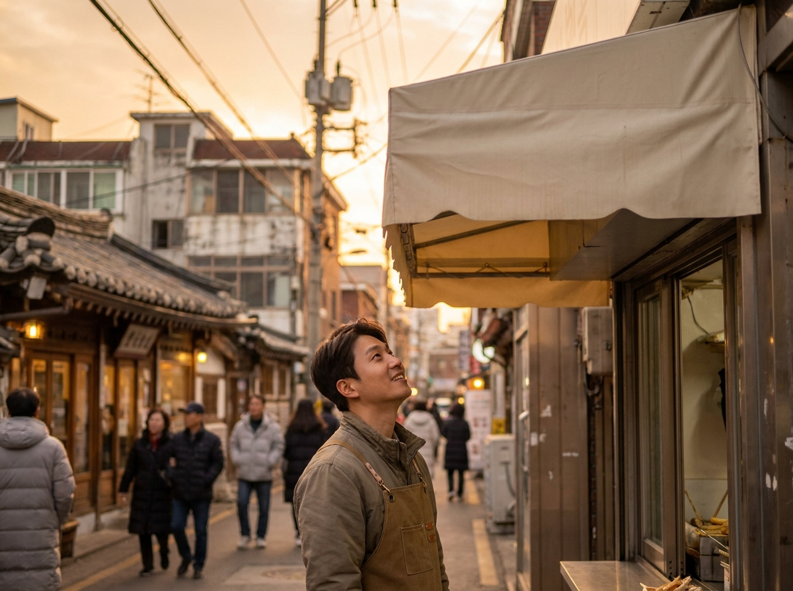
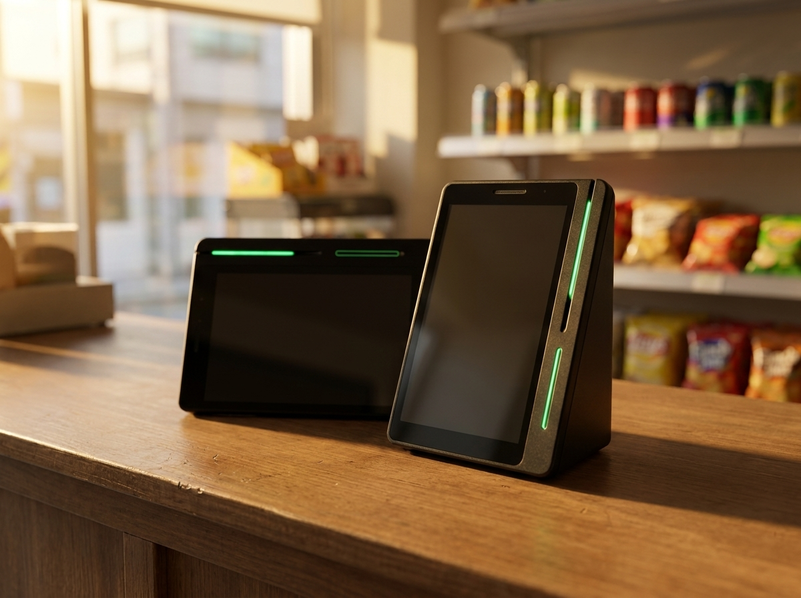
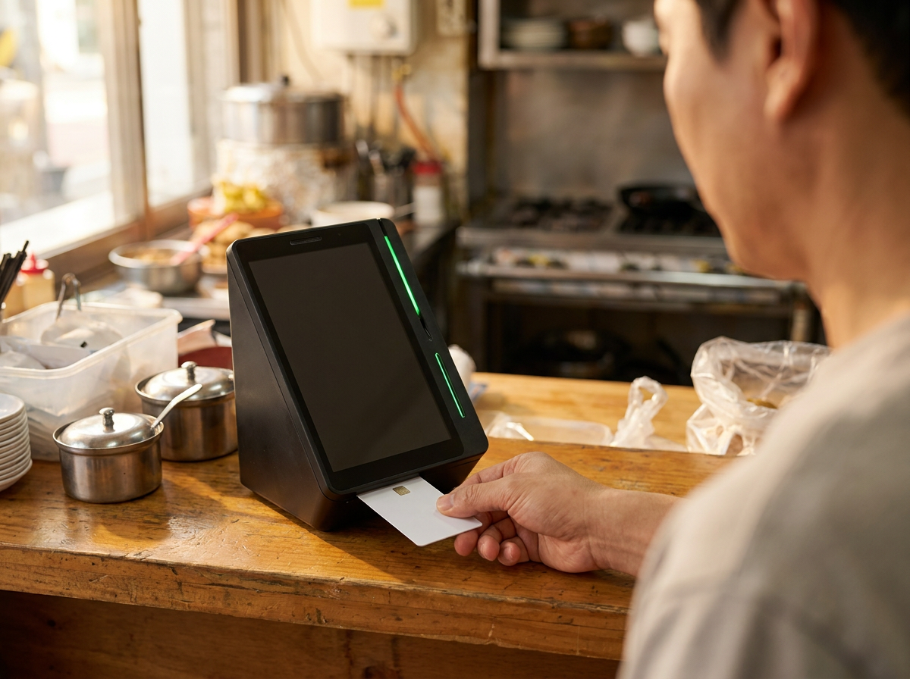

창업 전 상권 분석, 공개 데이터와 발품을 함께 봐야 답이 나옵니다
상권 분석의 결론부터 말씀드리면, 데이터만 믿어도 안 되고 감만 믿어도 안 됩니다. 공개된 상권 데이터로 그 동네의 큰 그림을 먼저 잡고, 그다음 직접 그 자리에 서서 요일과 시간대별로 사람이 얼마나 지나가는지 세어 보는 것. 이 두 가지가 겹치는 지점에 답이 있습니다. 누리네트웍스는 수도권 매장을 직접 방문해 설치하고 관리하는 포스·결제단말 전문 업체입니다. 개업 준비 단계의 사장님들을 현장에서 자주 만나다 보니, 자리를 정하기 전에 무엇을 확인하셨는지에 따라 개업 이후의 준비 과정이 달라지는 모습을 자주 보게 됩니다. 이 글에서는 자리를 고를 때 확인할 항목과 순서를 정리했습니다.

자리를 정하는 일은 되돌리기가 가장 어렵습니다
장사를 하면서 바꿀 수 있는 것은 생각보다 많습니다. 메뉴는 조정할 수 있고, 가격표도 다시 만들 수 있고, 인테리어도 손볼 수 있습니다. 그런데 자리만은 다릅니다. 계약이 걸려 있고, 시설 투자가 들어가 있고, 이미 그 동네에서 얼굴을 알린 상태이기 때문입니다. 그래서 상권 분석은 개업 준비 항목 가운데 하나가 아니라, 가장 먼저 그리고 가장 오래 붙잡고 있어야 할 일에 가깝습니다.
그런데 실제 준비 과정을 들어 보면 순서가 뒤바뀐 경우가 많습니다. 마음에 드는 자리를 먼저 발견하고, 그 자리를 정당화할 근거를 나중에 찾는 방식입니다. "사람이 많이 다니더라", "여기 곧 뜬다더라" 같은 말은 사실일 수도 있지만, 확인해 본 사실인지 들은 이야기인지 구분되지 않습니다. 순서를 바꿔야 합니다. 기준을 먼저 정하고, 그 기준으로 여러 자리를 같은 방식으로 재 보는 것이 안전합니다.
반대로 데이터만 붙잡고 있는 경우도 있습니다. 화면상 숫자는 좋은데 막상 가 보면 사람이 지나가기만 할 뿐 멈추지 않는 자리가 있습니다. 통행량이 많아도 그 흐름이 우리 업종의 손님이 아니면 매출로 이어지지 않습니다. 그래서 데이터와 현장은 어느 한쪽이 다른 쪽을 대신하지 못하고, 서로를 검증하는 관계로 봐야 합니다.
공개 데이터로 먼저 큰 그림을 잡습니다
다행히 상권을 살펴볼 수 있는 공개 정보가 마련되어 있습니다. 소상공인시장진흥공단에서 운영하는 상권정보시스템이 대표적이고, 지자체나 통계 기관에서 제공하는 지역 자료도 함께 참고할 수 있습니다. 창업 준비 단계에서 한 번쯤 들여다볼 가치가 충분합니다.
이런 자료에서 대체로 확인해 볼 만한 것은 세 가지 방향입니다. 첫째는 사람의 흐름입니다. 어느 시간대에 사람이 모이는지, 주중과 주말 중 어느 쪽이 강한 동네인지 큰 경향을 볼 수 있습니다. 둘째는 업종의 분포입니다. 내가 하려는 업종이 그 반경 안에 얼마나 있는지, 최근 늘어나는 흐름인지 줄어드는 흐름인지가 판단에 도움이 됩니다. 셋째는 그 지역의 전반적인 여건입니다. 주거지 중심인지 사무실 중심인지, 어떤 연령대가 주로 생활하는 곳인지에 따라 같은 메뉴도 반응이 달라집니다.
다만 한 가지 분명히 말씀드릴 것이 있습니다. 이런 시스템의 제공 항목과 화면 구성, 이용 방법, 산출 기준은 시기에 따라 달라질 수 있습니다. 이 글의 설명은 대략적인 방향으로만 참고하시고, 실제로 확인하실 때는 소상공인시장진흥공단 등 공식기관에서 최신 정보를 직접 확인하시길 권합니다. 임대 조건이나 권리 관계 역시 자리마다 사정이 다르므로, 공인중개사 등 자격을 갖춘 전문가와 상담해 확인하시는 편이 안전합니다.

데이터가 보여주지 못하는 것은 발품으로 채웁니다
화면에서 얻은 정보는 어디까지나 평균값에 가깝습니다. 같은 골목이라도 길 이쪽과 저쪽의 통행량이 다르고, 계단 두 칸 차이로 손님이 들어오고 안 들어오고가 갈립니다. 이 차이는 직접 서 있어 보지 않으면 알 수 없습니다.
직접 세어 보는 방법이 가장 단순합니다. 후보 자리 앞에 서서 정해진 시간 동안 지나가는 사람 수를 직접 세 보십시오. 한 번으로는 부족합니다. 평일과 주말, 점심시간과 저녁시간, 가능하면 날씨가 다른 날까지 나눠서 확인하시는 것이 좋습니다. 이때 숫자만 세지 마시고 어떤 사람이 지나가는지도 함께 보셔야 합니다. 직장인인지 학생인지 어린아이를 데리고 나온 가족인지에 따라 같은 통행량도 의미가 완전히 달라집니다.
| 현장에서 확인할 항목 | 무엇을 보나요 |
|---|---|
| 요일·시간대별 통행량 | 평일/주말, 점심/저녁을 나눠 직접 세어 보기 |
| 지나가는 사람의 성격 | 직장인·학생·가족 등 내 업종 손님인지 |
| 경쟁 점포 위치 | 반경 안 동일 업종, 손님이 실제로 차 있는지 |
| 접근성 | 계단·경사·출입문, 유모차나 휠체어 진입 여부 |
| 주차와 대중교통 | 주차 가능 여부, 정류장·역과의 실제 도보 시간 |
| 간판 시야 | 걸어오는 방향에서 우리 가게가 보이는지 |
경쟁 점포를 볼 때는 개수만 세지 마시고 안을 들여다보십시오. 같은 업종이 여럿이라도 손님이 고르게 차 있다면 그 동네가 그 업종의 수요를 가진 곳이라는 뜻이고, 반대로 간판만 있고 자리가 비어 있다면 숫자와 무관하게 신호가 좋지 않습니다. 접근성도 마찬가지입니다. 지도상 거리는 가까운데 실제로 걸어 보면 신호등 하나 때문에 발길이 끊기는 자리가 있습니다.
자리를 정했다면, 다음은 손님이 찾아오게 만드는 일입니다
상권 분석으로 자리를 정하고 나면 질문이 바뀝니다. 이제는 "여기 사람이 다니는가"가 아니라 "그 사람들이 우리 가게를 알게 되는가"입니다. 요즘 손님은 골목을 걷다가 우연히 들어오기도 하지만, 그보다 먼저 검색으로 동네 가게를 찾아봅니다. 지도에서 위치를 확인하고, 사진과 후기를 보고, 영업시간을 확인한 뒤에 발걸음을 옮깁니다.
그래서 개업 초기에는 검색에서 매장까지의 흐름을 끊기지 않게 이어 두는 편이 유리합니다. 네이버단말기가 이 대목에 잘 맞습니다. 네이버 플레이스·예약과 연결해 쓸 수 있어, 검색으로 찾아온 손님이 방문하고 결제까지 하는 흐름을 하나로 이어 둘 수 있습니다. 연동 범위는 업종·가입 조건에 따라 다를 수 있어 상담 시 안내해 드립니다. 네이버페이 적립과 결제도 함께 받을 수 있어, 검색으로 들어온 손님을 매장에서 그대로 이어받는 구성이 됩니다. 월 0원·약정 없이 시작할 수 있다는 점도 지출을 아껴야 하는 개업 초기에는 적지 않은 차이입니다.
누리네트웍스는 정품 신제품 보증과 수도권 직영 설치·관리를 원칙으로 합니다. 업종과 매장 구조에 따라 필요한 구성이 달라지므로, 자리가 정해지셨다면 도면이나 사진만 보여 주셔도 어떤 구성이 맞을지 함께 정리해 드립니다. 주문·결제·정산 올인원으로 넓혀 갈지, 결제 단말 한 대로 가볍게 시작할지도 상황에 맞춰 안내해 드립니다.

자주 묻는 질문(FAQ)
Q. 상권 분석은 언제부터 시작하는 게 좋을까요?
자리를 알아보기 전에 시작하시는 것이 좋습니다. 마음에 드는 점포를 먼저 찾은 뒤에 분석하면 이미 기울어진 판단이 되기 쉽습니다. 업종과 목표 손님을 먼저 정하고, 그 기준으로 여러 후보지를 같은 방식으로 비교해 보시길 권합니다.
Q. 공개 데이터만 봐도 충분한가요?
방향을 잡는 데는 도움이 되지만 그것만으로 결정하기는 어렵습니다. 데이터는 넓은 범위의 경향을 보여 주고, 길 하나 차이나 계단 몇 칸 차이는 담기지 않습니다. 현장 확인과 함께 보시는 편이 안전합니다. 또한 제공 항목과 기준은 바뀔 수 있으니 소상공인시장진흥공단 등 공식기관에서 최신 정보를 확인하시길 권합니다.
Q. 통행량은 몇 번이나 세어 봐야 하나요?
정해진 정답은 없지만, 최소한 평일과 주말을 나누고 그 안에서 시간대를 둘 이상 잡아 보시는 것을 권합니다. 하루만 보고 판단하면 그날의 날씨나 행사에 휘둘리기 쉽습니다.
Q. 자리를 정한 다음 결제 준비는 언제 하면 되나요?
계약을 마치고 공사 일정이 잡히는 시점에 미리 상담을 시작하시면 여유가 있습니다. 개업일에 맞춰 설치와 가맹 절차를 함께 준비해야 하므로, 오픈 임박해서 알아보시면 일정이 빠듯해질 수 있습니다.
자리를 정하셨다면, 다음 준비를 도와드리겠습니다
좋은 자리는 운으로 만나는 것이 아니라, 같은 기준으로 여러 곳을 재 보는 과정에서 걸러집니다. 공개 데이터로 큰 그림을 잡고, 직접 서서 세어 본 숫자로 그 그림을 확인하는 것. 번거롭더라도 이 순서를 지켜 두면, 개업 이후에 판단할 일이 생겼을 때 기준으로 삼을 것이 남습니다. 자리가 정해지셨다면 그다음은 손님이 우리 가게를 찾아오게 만드는 일입니다. 업종과 매장 상황을 말씀해 주시면 그에 맞는 구성을 함께 찾아 드리겠습니다. 수도권은 직접 방문해 설치하고 관리해 드리니 부담 없이 문의 주세요.
- 📞 전화상담 1544-7754
- 🌐 홈페이지 https://nwpos.co.kr

📷 인스타그램 팔로우 https://www.instagram.com/nurinetworkspos

▶️ 유튜브 구독 https://www.youtube.com/@nurinetworks